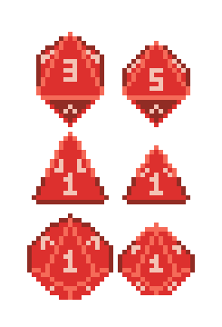

I'm going to have to improvise here. There is nothing of merit in these words so you don't have to read them.
HTML looks different
I remember doing HTML back in high school. That was a long time ago. HTML5 is a pretty different beast than that stuff I did back in 200∅.
It's all for the sake of readability I'm sure, and making the language more accessible to people.
Entity usage status: USED
I used that symbol as a way of obscuring the year but the joke isn't good because it's not very obvious. Good thing meta humor isn't part of the assignement.
I actually wanted to use a symbol called "Combining Cyrillic Millions" to represent the censor but I couldn't find the entity code immediately so I just moved on to another symbol I just happened to know the code for.
Back when I was a kid it was funny to use Combining Cyrillic Millions because many browsers didn't support it right. Any text entered after that symbol would end up printing in reverse. This doesn't happen much anymore.
Whoa look out here comes a picture

I just grabbed a random image off my hard drive. I was practicing drawing dice at one point I guess.
This isn't enough content...
Life has been pretty hectic lately, I haven't had the time to do much here. However this meets all the requirements it needs to. I'll turn this into something more practical later.